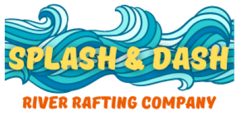

Site Name
Splash & Dash River Rafting Company
Site Purpose
Inform potential customers about rafting on the New River Gorge, and provide links to purchase various packages. Site pages include annual events as well as popular attractions within New River Gorge National Park, which river rafters may be interested in planning their visits around. Photographs showing a variety of people on rafting groups, along with brief testimonials about their positive experiences, will be included to persuade visitors to purchase packages. Discounts are given to visitors to the website during the months of November-February. The website drives 40-50% of booking for Splash & Dash. Visitors to the website are invited to share their email address to receive news of related events, and special offers given throughout the year.
Target Audience
Outdoor enthusiasts of all ages, with an emphasis on visitors planning trips to New River Gorge National Park from May 1-September 5. Specific packages exist for couples on romantic getaways including honeymoons and anniversaries; family vacations and reunions; youth camps for ages 10-18; and corporate, educational, or other retreats. Website can be accessed via desktop, iOS and Android devices, and tablets.
- Why should I visit New River Gorge National Park?
- When is the best time for my special needs plan a river rafting trip on the New River Gorge?
- Which trips are ideal for families or groups with kids?
- What trips are ideal for large groups of people?
- Who can go on river rafting trips, and who should not take a trip?
- Who directs the river rafting trips, and what is their experience?
- Are there accomodations for people with disabilities?
- How much are packages, and can I purchase a package or reserve a spot on a river rafting trip?
- How do I pay for my river rafting trip, and what financing options are available?
- What do I need to do to prepare for my river rafting expedition?
Logo

.png)
Color Scheme
Typography